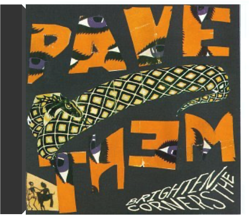
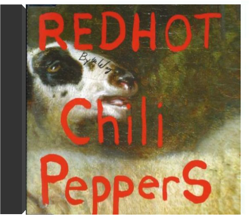
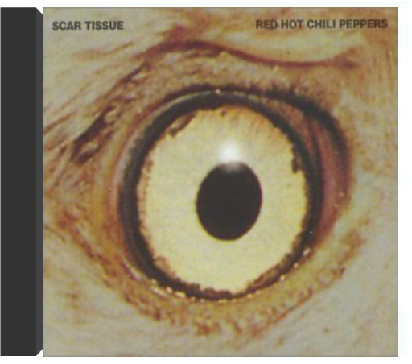

Why Don't You Get a JobOffspring Why Don't You Get a JobOffspring  The second single from the Southern California punk rockers'1998 album 'Americana'. Contains 'Why Don't You Get A Job?' (Album Version), 'Pretty Fly (For A White Guy)' (LowridersRemix), 'Beheaded' and the CD-ROM video to 'Pretty Fly (ForA White Guy)'. Sli Brighten the CornersPavement 1997 release 'Brighten The Corners' is a record that reveals its gifts gradually, giving you enough information the first time to make you want come back for more. Matador Records. By The WayRed Hot Chili Peppers Produced by Rick Rubin! Huge 2002 LP includes "By The Way" & "Zephyr Song". Scar Tissue / Gong Li / Instrumental #1Red Hot Chili Peppers The first single from the alternative rock act's 1999 album 'Californication'. It's backed with two previously unreleased non-album tracks, 'Gong Li' & Instrumental #1'. Slimline jewelcase. 1999 release. Buena Vista Social ClubRy Cooder 2-LP gatefold set; Ry Cooder produced & played on this project recorded in Havana, Cuba, which features some great Cuban musicians, many never heard outside their native land, including pianist Ruben Gonzalez.  Smile...It Confuses PeopleSandi Thom Smile...It Confuses PeopleSandi Thom Smile...It Confuses People by Sandi Thom |


 Made with Delicious Library
Made with Delicious LibrarySpringfield, State zipflap congrotus delicious library Doddridge, Edward